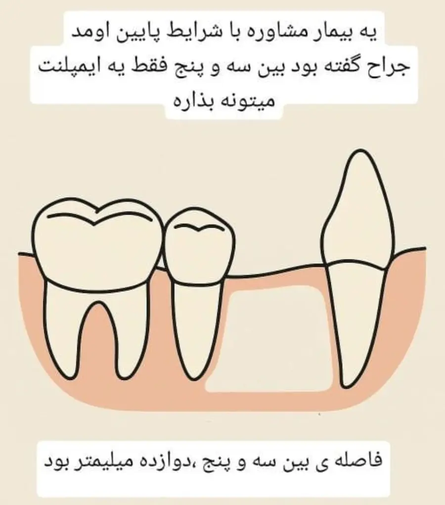

نسخه استخراجشده؛ ترجمه یا تأیید علمی انجام نشده است. وضعیت: captured
کانین و پرهمولر دوم سر جای خودشان هستند و فضای بیدندانی بین همین دو دندان است. عرض مزیودیستالی این فضا ۱۲ میلیمتر است: از عرض یک پرهمولر معمولی (حدود ۷ میلیمتر) بیشتر، ولی برای دو ایمپلنت کافی نیست؛ بررسی جراحی هم تأیید کرده که فقط یک ایمپلنت جا میشود. پروتز را چطور طراحی میکنی؟

پس بحث سر تعداد ایمپلنت تمام است و سؤال باقیمانده فقط پروتزی است. چهار طراحی مطرح است: یک ایمپلنت وسط فضا با یک روکش پهن و مولرمانند؛ یک ایمپلنت وسط فضا با دو روکش با ظاهر دو پرهمولر؛ دو واحد پرهمولر با ایمپلنت در سمت مزیال و کانتیلور دیستالی؛ و دو واحد پرهمولر با ایمپلنت در سمت دیستال و کانتیلور مزیالی. جواب: یک ایمپلنت بهعلاوهی یک واحد کانتیلور.
هر بخشی از روکش که خارج از محور ایمپلنت قرار بگیرد، موقع جویدن نیرو را به شکل خمشی به اباتمنت و اسکرو منتقل میکند (اهرم یا لِوِر). روکش پهن و دو روکش روی ایمپلنت وسط از نظر مکانیکی یکساناند: کانتیلور دوطرفه، با دو مشکل بالینی.
ایمپلنت در یک سر فضا با یک واحد کانتیلور فقط یک بازوی اهرم دارد و همین تفاوت اصلی است:
طراحی «یک ایمپلنت با یک واحد کانتیلور» در مقایسه با «دو ایمپلنت با دو روکش مجزا» بقای ایمپلنت پایینتری ندارد و در تحلیل استخوان مارجینال و عمق پاکت هم تفاوت معناداری دیده نشده است. آنچه در گروه کانتیلور بهطور معنادار بیشتر است، عوارض مکانیکی است: شلشدن اسکرو، چیپینگ ونیر و از دست رفتن ریتنشن. پس ریسک این طراحی مکانیکی است، نه بیولوژیک، و عوارض مکانیکی دقیقاً همانهاییاند که با طراحی درست و کنترل اکلوژن کم میشوند.
«ایمپلنت وسط با ظاهر دو روکش» شهودی جذاب است چون متقارن به نظر میرسد، ولی اهرم را حذف نمیکند و دوطرفهاش میکند، کانتور و emergence angle را در هر دو سمت از کنترل خارج میکند، و بدنهی شواهد اختصاصی ندارد؛ در حالی که برای «یک ایمپلنت و یک واحد کانتیلور» مرور سیستماتیک، کارآزمایی تصادفی و مطالعات بلندمدت وجود دارد. وقتی دو طرح منطق مکانیکی نزدیک به هم دارند، وزن شواهد تعیینکننده است.
نوع سؤال: ساخت کلمه · 7 خانه
حروف منبع: ی · م · ن · ا · ک · ی · ک